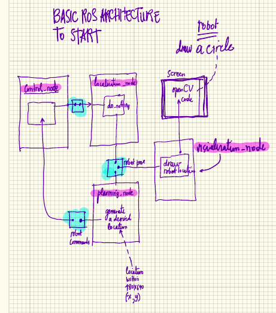

Ahmet's Robots
Table of Contents
1 ebug_swarm_control
1.1 Instructions
Just drop the ebug_swarm_control folder into
/home/<username>/catkin_ws/src and issue a catkin_make as per
manuals/tutorials.
I have made also a launch file.
Jeez!
1.2 Mail
Original mail from the man.
Hi Nicola, Can we build a ROS structure consisting of the following blocks: 1. control_node 2. localization_node 3. planning_node 4. visualization_node They will basically do nothing but exchange information through the ROS provided (blue marked in the attached diagram) mechanisms (I forgot the name of this whiteboard?). If you can write a simple program in the planning_node that will generate an initial position x,y 0 < x < 640 and 0 < y < 480 (blob camera resolution). control_node will read it and write it for localization_node to read. Then the localization_node will read and write it for visualization_node and planning_node to read. visualization_node will have an openCV code to display a circle in a rectangular window representing the current position of the "robot" as a simple circle. planning_node will read the position and generate a next position to model a random walk of the robot. This cycle will keep going indefinitely. I think this will be a good starting point for us.
1.3 Attached Material

Figure 1: Original Ahmet Idea
1.4 DONE Action Plan
- DONE Create nodes
- DONE Setup makefiles and xml
- DONE
planning_nodethe planning_node that will generate an initial position x,y 0 < x < 640 and 0 < y < 480 (blob camera resolution).
- DONE basic data generation
- It is an image
640x480; - It is a
sensor_msgs/Image Message - File:
sensor_msgs/Image.msg - Things to take into consideration:
- Header header (see 1.4.3.1.2)
- WTF?!?!
uint32 height # image height, that is, number of rows- Can Fake it
uint32 width # image width, that is, number of columns- Can Fake it
string encoding # Encoding of pixels -- channel meaning, ordering, size- Can Fake it
uint8 is_bigendian # is this data bigendian?- Can Fake
uint32 step # Full row length in bytes- Can Fake
uint8[] data # actual matrix data, size is (step * rows)- Can Fake:
- Fill it with 1s
- Can Fake:
- ROS TAKES CARE OF ALL DEFAULTS
- How to handle it
Send it as a message on a dedicated topic.
- Info
# This message contains an uncompressed image # (0, 0) is at top-left corner of image # Header header # Header timestamp should be acquisition time of image # Header frame_id should be optical frame of camera # origin of frame should be optical center of cameara # +x should point to the right in the image # +y should point down in the image # +z should point into to plane of the image # If the frame_id here and the frame_id of the CameraInfo # message associated with the image conflict # the behavior is undefined uint32 height # image height, that is, number of rows uint32 width # image width, that is, number of columns # The legal values for encoding are in file src/image_encodings.cpp # If you want to standardize a new string format, join # ros-users@lists.sourceforge.net and send an email proposing a new encoding. string encoding # Encoding of pixels -- channel meaning, ordering, size # taken from the list of strings in include/sensor_msgs/image_encodings.h uint8 is_bigendian # is this data bigendian? uint32 step # Full row length in bytes uint8[] data # actual matrix data, size is (step * rows)
- It is an image
- DONE basic data generation
- DONE
control_nodecontrol_node will read it and write it for localization_node to read.
- DONE Message Transport
- Read the image from 1.4.3
- Rebroadcast it.
- DONE Message Transport
- DONE
localization_nodethe localization_node will read and write it for visualization_node and planning_node to read.
- DONE Message Transport
Same as 1.4.4
- DONE Message Transport
- DONE
visualization_nodevisualization_node will have an openCV code to display a circle in a rectangular window representing the current position of the "robot" as a simple circle.
1.5 TODO Follow-up [0/2]
[ ]set proper names on the topics[0/4]-
[ ]blobs - control -> localization
-
[ ]poses - localization -> planning
-
[ ]commands - planning -> control
-
[ ]trajectories - traj-calc -> planning
-
[ ]each node as a separate package as in Figure 2[0/4][ ]control[ ]localization[ ]planning[ ]traj-calc

Figure 2: Ahmet's New Node Structure

Figure 3: Ahmet's Updated Node Structure
2 Image Comparison